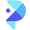

P
Petalica PaintРедактировать изображение
Сравнивать «Petalica Paint» с другими инструментами раздела «Редактировать изображение» удобнее на одинаковом исходном материале.
Раздел «Редактировать изображение»: варианты ИИ для этой задачи, описания возможностей и переходы к обзорам. Сравните несколько решений на одинаковом примере.
Подготовьте чистую версию собственной фотографии рабочего места, убрав один отвлекающий предмет. Укажите точную область правки и защищённые детали; сравните линии стола, текстуру стены и соседние объекты, чтобы заметить следы перестройки фона вокруг удалённого элемента.
Убери красный пакет под моим рабочим столом. Восстанови спокойный фон в этой области, сохрани ножки стола, провод лампы и рисунок пола; остальные предметы и освещение не меняй.
Сравнивать «Petalica Paint» с другими инструментами раздела «Редактировать изображение» удобнее на одинаковом исходном материале.
Для «Photo AI Studio» сначала определите свою задачу и требуемый результат. Карточка относится к направлению «Изображения».
«RocketAI» готовит визуальные материалы по заданию. «RocketAI» также помогает исправлять и оформлять фотографии.
«Unscreen.com» отделяет объект от фона изображения. «Unscreen.com» помогает править исходный видеоматериал.
«Visio Studio» отделяет объект от фона изображения. Дополнительно «Visio Studio» помогает исправлять и оформлять фотографии.
«Watermark Remover AI» готовит визуальные материалы по заданию.
«Benzin.io» отделяет объект от фона изображения.
«BoostMe» представлен в разделе «Изображения». При выборе проверьте нужную операцию и условия работы с результатом.
«ClarityAI (clarityai.cc)» увеличивает изображения для дальнейшей обработки.
Сравнивать «ControlNet» с другими инструментами раздела «Изображения» удобнее на одинаковом исходном материале.
«Deep Art Effects» помогает исправлять и оформлять фотографии.
Сравнивать «Dreamcard AI» с другими инструментами раздела «Редактировать изображение» удобнее на одинаковом исходном материале.
«Evoto AI» помогает исправлять и оформлять фотографии.
«face swapper online» меняет лицо в визуальном материале.
Getalpaca добавляет ИИ-инструменты проектирования в Photoshop через плагин. Предусмотрены обучение собственных моделей и создание изображений. Продукт связывает генеративный процесс с привычной средой работы над графикой, где подготовленный визуальный материал можно рассматривать в контексте редакторского проекта, а не только как отдельный результат внешнего текстового запроса.
«Getimg AI» готовит визуальные материалы по заданию.
Для «Image Compressor AI» сначала определите свою задачу и требуемый результат. Карточка относится к направлению «Продуктивность».
«Magickimg» помогает исправлять и оформлять фотографии.
Сравнивать «Magicly» с другими инструментами раздела «Генерация изображений» удобнее на одинаковом исходном материале.
«PhotoMaker V2» помогает исправлять и оформлять фотографии.
«Pixian AI» отделяет объект от фона изображения.
Topaz Sharpen AI повышает резкость снимков с использованием глубокого обучения. Набор возможностей охватывает обработка следов дрожания, коррекция фокуса и работа с размытием. Программа предназначена для изменения визуальной чёткости готовой фотографии, не подтверждая восстановление каждой детали или отсутствие артефактов во всех результатах.
«НейроХолст» готовит визуальные материалы по заданию.
«AirBrush Studio» помогает исправлять и оформлять фотографии.
Сравнивать «Artius» с другими инструментами раздела «Генерация изображений» удобнее на одинаковом исходном материале.
Claid AI от Let’s Enhance обрабатывает фотографии товаров для электронной коммерции. Сервис удаляет или создаёт фон, увеличивает изображение и предлагает ретушь с цветокоррекцией. Доступны веб-приложение и API, чтобы связывать визуальную обработку снимков с рабочими системами магазина.
«Cutout Pro» помогает исправлять и оформлять фотографии.
Dewatermark AI помогает находить и удалять водяные знаки на изображениях, а для сложных участков предлагает ручную кисть. После обработки сравните восстановленную область с соседними деталями и проверьте текстуры. Используйте инструмент с материалом, который вправе изменять; удаление отметки не меняет условий лицензии исходного изображения.
«Face Swap AI» меняет лицо в визуальном материале.
«FaceAiSwap» меняет лицо в визуальном материале.
FaceApp редактирует фотографии средствами ИИ и предлагает эффекты изменения внешности. Среди описанных вариантов есть старение и волосы на лице. Приложение доступно в App Store и Google Play, объединяя работу с исходным снимком и рассмотрение выбранного визуального изменения портрета пользователя.
«Facet 2.0» помогает исправлять и оформлять фотографии.
Для «Glasses Gone» сначала определите свою задачу и требуемый результат. Карточка относится к направлению «Редактировать изображение».
Image Recursor создаёт и перерабатывает визуальные материалы с помощью генеративных моделей. Пользователь уточняет описание по ходу работы и меняет характер изображения, например добавляя юмористическую подачу. Интерактивное изменение запроса позволяет развивать выбранный визуальный замысел и корректировать полученные варианты.
ImageCreator for PS добавляет к Photoshop средства ИИ для создания иллюстраций. Плагин предлагает редактирование и несколько управляющих моделей, включая ControlNet. Пользователь может готовить визуальный материал внутри редактора, сочетая генерацию с изменением изображения и выбранными инструментами управления результатом.
Для «Little Artist» сначала определите свою задачу и требуемый результат. Карточка относится к направлению «Генерация изображений».
Lunacy предоставляет программную среду дизайна со встроенной графикой и автоматической компоновкой. В продукте есть импорт из Figma и удаление фона, а также ИИ-инструменты. Автономные функции и форум сообщества дополняют подготовку визуальных материалов и работу пользователя с выбранным дизайн-проектом.
Magic Mate объединяет общение с ИИ и обработку творческого материала. Предусмотрены рисование, восстановление цветов картинки, словесная редактура и перевод аудио. Через подключение WhatsApp эти сценарии доступны в окружении мессенджера; помощник сочетает текстовые, визуальные и звуковые задачи в одном продукте.
«NeuralPix» помогает исправлять и оформлять фотографии.

PicWish используют, чтобы менять фотографии с учётом выбранного оформления. Ещё одно направление работы: создавать и уточнять визуальный макет.
«Remover ZMO AI» убирает выбранные объекты из визуального материала. «Remover ZMO AI» помогает исправлять и оформлять фотографии.
«Starving Robots AI» представлен в разделе «Редактировать изображение». При выборе проверьте нужную операцию и условия работы с результатом.
Stylar помогает создавать и редактировать изображения с участием ИИ. Инструменты включают управление композицией, помощь в дизайне и изменение фотографий через фильтры. Продукт ориентирован на графическую работу, где генерация визуального материала сочетается с настройкой его подачи и расположения элементов вместо одной общей операции над готовым кадром.
«Visuali» помогает исправлять и оформлять фотографии.
Сравнивать «FaceMeme» с другими инструментами раздела «Редактировать изображение» удобнее на одинаковом исходном материале.
«Fix Blurry Photos» помогает исправлять и оформлять фотографии.
Для «FotoFix» сначала определите свою задачу и требуемый результат. Карточка относится к направлению «Редактировать изображение».
«Green Screen AI» отделяет объект от фона изображения.
Страница 2 из 5